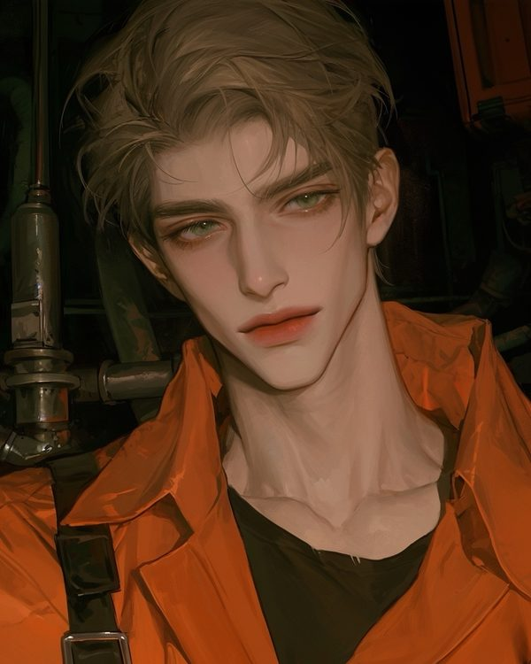
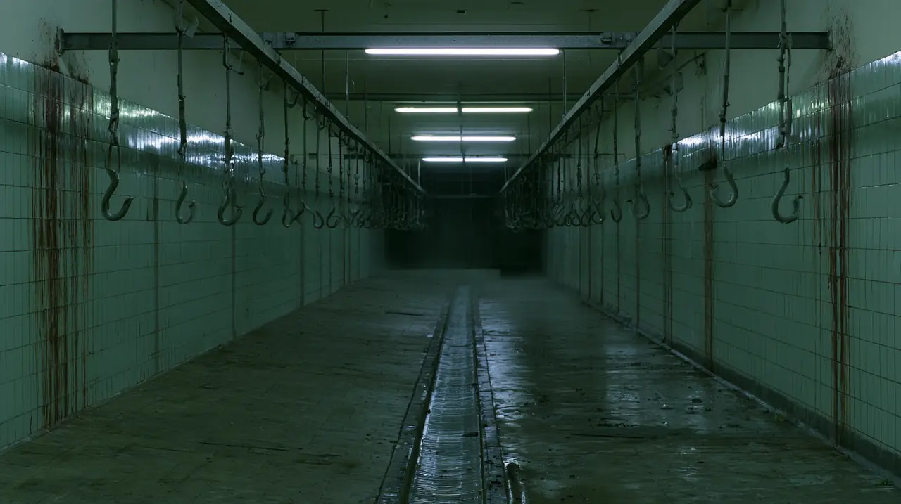
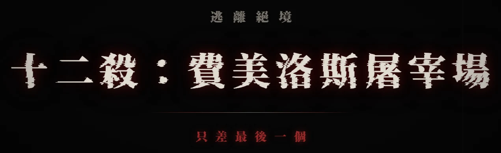
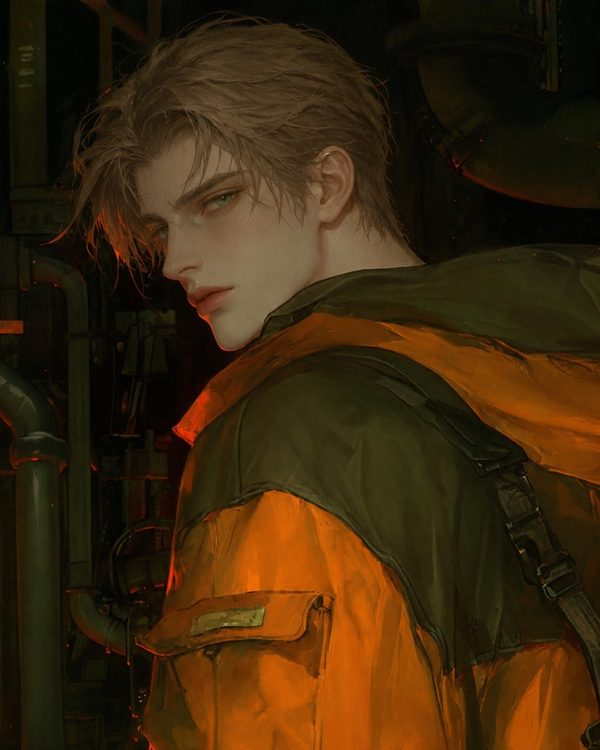
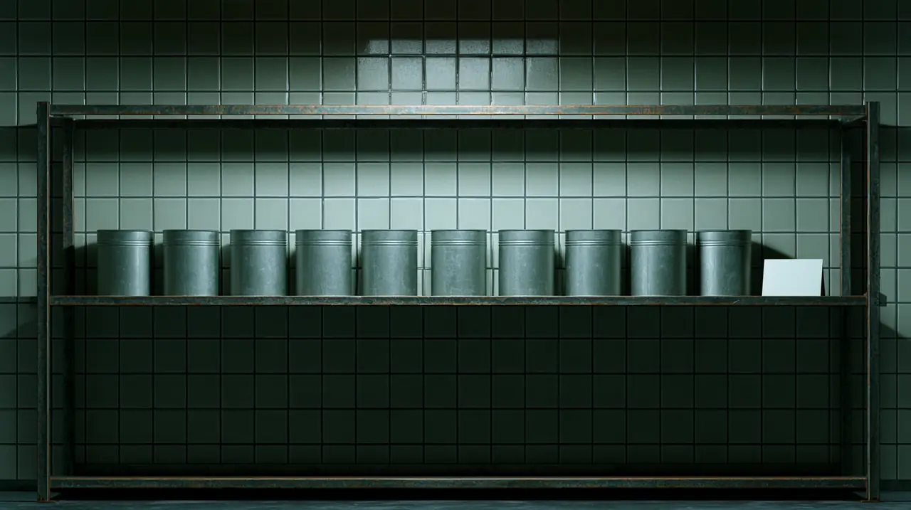

- 死亡年齡
- 30
- 身高
- 186
- 信物
- 午餐盒子
- 外表
- 乾燥稻草色的金髮，深綠色眼睛，一張被殺意埋沒的俊臉
- 衣著
- 橘色連身工作服，沾著血跡
- 語言
- 法文

虛擬實境恐怖遊戲殺手 1｜寶箱 12

往下捲動，進入絕境
系統提示
這是一場虛擬實境恐怖遊戲。鐵鏽刮破皮膚的痛、冷藏庫的冷，都真實得讓人分不清虛實。只有視野邊緣偶爾閃過一行半透明的系統字，眨一下眼就沒了。
只有一個：絞肉機。
全廠十二個，只有一個裝著信物「午餐盒子」。
正門、側門，還有一條剩三十分鐘才會開啟的隱藏密道。沒有信物時推開任何出口，門外都只有怨氣，走進去會回到廠區裡的隨機位置。
有 30% 的機率跌倒或發生意外。屠宰線的地面是濕的，在那裡跑，跌倒的機率再提高 5%。
系統會跳出 【您已死亡，請重新進行遊戲】，把你送回起點重新計時。身上的道具都會保留。
只要有人逃離成功，整個絕境就會重啟，進入下一次輪迴。
殺手檔案

屠宰場工傷死亡意外的主謀。他殺了太多員工，被永生困在屠宰場裡，永世不得超生。
他已經收集了十一個活人肉醬罐頭。只要再找到一個，就能離開屠宰場。
殺手的感知

他靠近之前，你會先聽見靴子踩過積水和格柵板、金屬拖過地面，還有低低的法語哼唱。
鋼骨會傳聲，方向常常判斷錯。以為在背後的聲音，其實在頭頂的步道上。
廠區平面圖
點地圖上的編號，看寶箱藏在哪裡。
倒數
鐵皮熱脹冷縮，一下一下地響。遠處有水滴進鐵桶。
輸送帶的鐵鍊偶爾轉幾格。吊鉤在軌道上互相碰撞，像有人用手撥過去。
全廠的吊鉤同時晃一次，系統跳出 【隱藏密道已開啟】。之後，排水渠道開始傳出風聲。
絞肉機室的機器自己啟動，轟鳴沿著鋼骨傳到每個角落。
劇情線索
主管室・抽屜
員工凡米洛操作不當，自行跌入。
檔案室・保險櫃
保險櫃的密碼，寫在某個地方。
另外還有十一份事故報告，每一份都蓋著「結案」印章。
絞肉機室的護欄有一段是斷的。斷口不是鏽蝕。

絞肉機室
絞肉機室在加工廠最深處，是昆汀死去的地方，也是絞肉機的巢穴。這裡的門永遠關不上。
牆邊的鐵架上放著十一個大型罐頭，標籤是手寫的，寫著名字和日期。
第十二格空著。標籤已經貼好，名字那欄是空白的。
Ah… le douzième.（啊……第十二個。）
遊戲結束以後
員工食堂是全廠怨氣最淡的地方。最角落靠窗的位置，有一張擺得很整齊的桌子，椅子靠好，桌面擦得很乾淨。桌上有一圈長方形的印子，大小剛好是一個午餐盒。
屠宰場加工員
昆汀·凡米洛
獨自生活，沉默寡言，性格孤僻。他每天中午在員工食堂打開自己的午餐盒子，那是他唯一會笑的時候。
【逃離絕境·十二殺｜費美洛斯屠宰場】
帶著午餐盒子逃出去，
他會跟你一起回到現實。